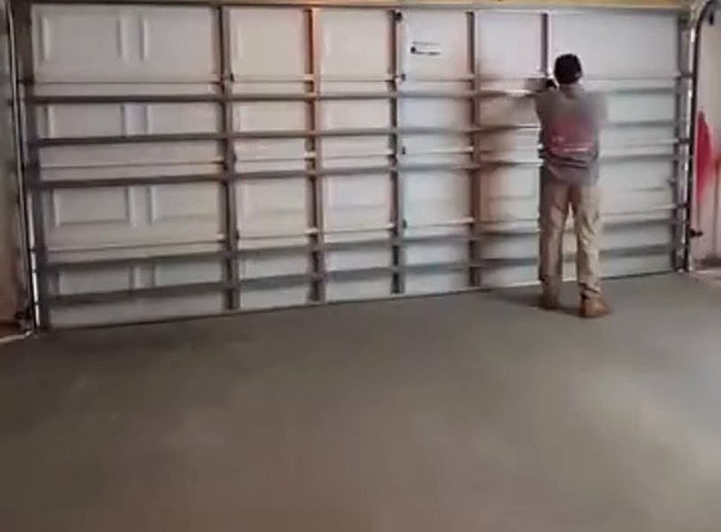
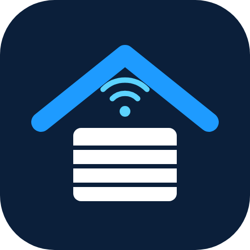
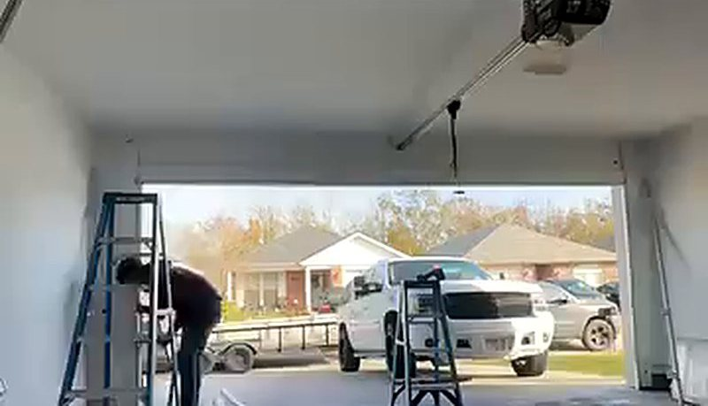
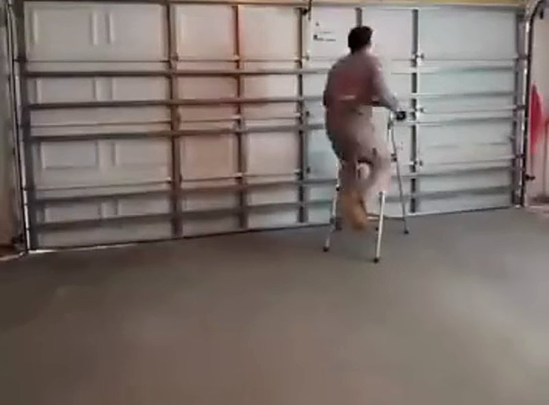

Garage Door Repair Done Right.
Broken springs, openers, cables and off-track doors fixed fast by trained local technicians across the Orlando & Tampa Bay areas.
- Same-day service often available
- Trained local technicians
- Price before work starts
Get a Free Quote
Tell us what's wrong. We'll call you back in minutes.
Current Specials
Mention the offer when you call or book online.
Garage Door Tune-Up
Inspection, spring & cable check, lubrication and hardware tightening.
Off Any Repair
Springs, openers, cables, rollers and off-track doors.
Off a New Door
Steel, insulated and carriage-house styles, professionally installed.
Garage Door Services
From a quick tune-up to a brand-new door, we handle it all.
Broken Spring Repair
Torsion and extension spring replacement, balanced and tested.
Learn more →Opener Repair & Replacement
Openers that won't run, remotes, keypads and safety sensors.
Learn more →Cables & Off-Track Doors
Snapped cables, bent tracks, worn rollers and crooked doors.
Learn more →$69 Tune-Up
Full inspection, lubrication and adjustment for just $69.
Learn more →New Garage Doors
Steel, insulated and carriage-house styles. $500 off.
Learn more →Why homeowners choose Smartech
- Fast response. Same-day service is often available, because a stuck garage door can't wait.
- Clear pricing. You'll know the price before any work starts. No surprises.
- Done right the first time. We check the whole system (springs, cables, rollers and opener), not just the part that broke.
- Real savings. $69 tune-ups, $100 off any repair and $500 off new doors.
- Local to you. Technicians across the Orlando and Tampa Bay areas.


Smartech technicianHow it works
Getting your door fixed is easy.
Call or request a quote
Tell us what's wrong. It takes less than a minute.
We come to you
A technician arrives, diagnoses the problem and gives you the price first.
Fixed and tested
We repair, balance and safety-test the door before we leave.
Areas We Serve
Call the number for your area for the fastest service.
Orlando Area
Orlando, Kissimmee, Sanford, Apopka, Oviedo, Clermont, Davenport, Haines City, Leesburg, The Villages, Ocala, Deltona and nearby cities.
(407) 553-9087Tampa Bay Area
Tampa, Brandon, Riverview, Wesley Chapel, Land O' Lakes, Clearwater, Largo, Pinellas Park, Palm Harbor, Tarpon Springs, Spring Hill, Brooksville and nearby cities.
(813) 519-5168Our Work
Real jobs from our technicians.
 Smartech technician
Smartech technician
Smartech technician
Smartech technicianFrequently Asked Questions
How fast can you get here?
Same-day service is often available in both the Orlando and Tampa Bay areas. Call or send a quote request and we'll give you the earliest time we have.
How much does a garage door repair cost?
It depends on the problem and the parts needed. We'll give you the price before any work starts, and you get $100 off any repair.
Do you work in my city?
We serve the Orlando area (including Kissimmee, Sanford, Daytona, Melbourne and Ocala) and the Tampa Bay area (including Brandon, Clearwater, Lakeland, Bradenton and Sarasota). See our service areas page for the full list.
What's included in the $69 tune-up?
A full safety inspection, spring and cable check, lubrication of all moving parts, hardware tightening and a safety-reverse test.
Should I fix a broken spring myself?
No. Garage door springs are under extreme tension and can cause serious injury. Leave spring work to a trained technician.
Garage door trouble? We'll fix it fast.
Same-day service often available across Orlando & Tampa Bay.